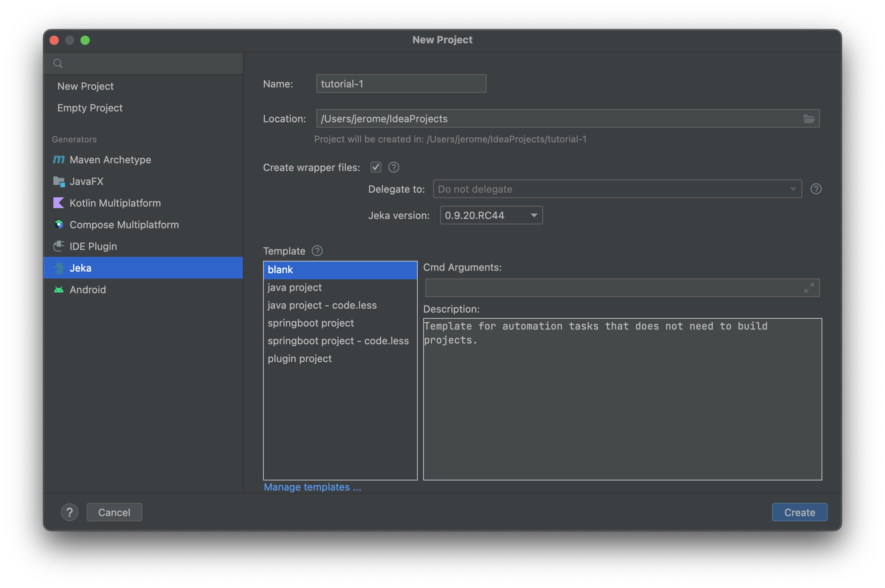
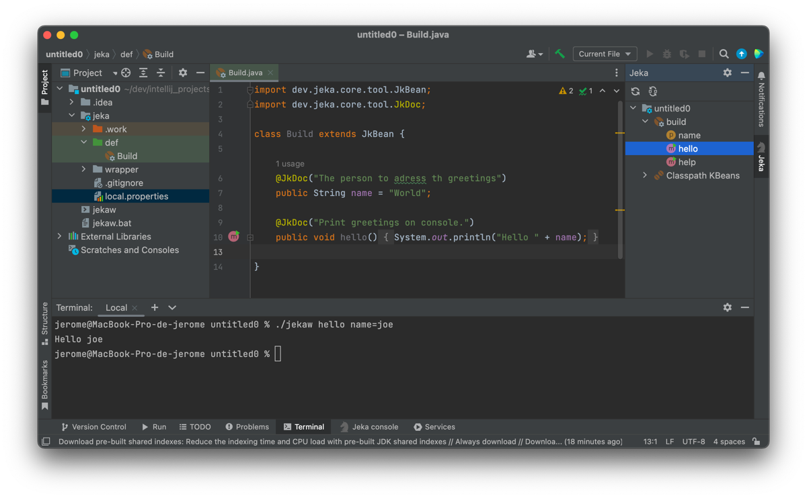
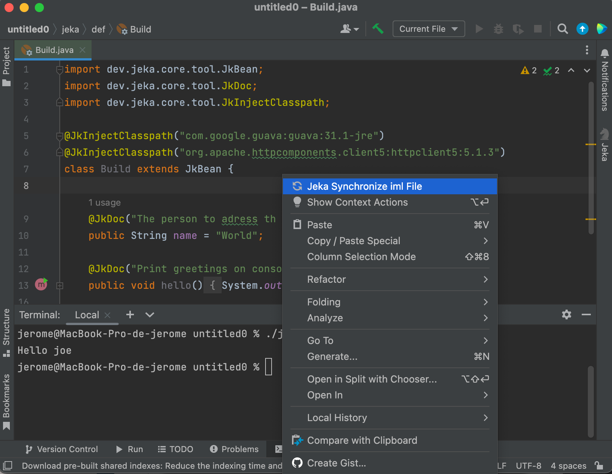
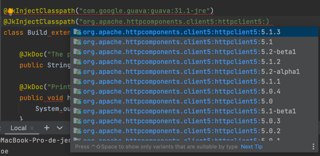
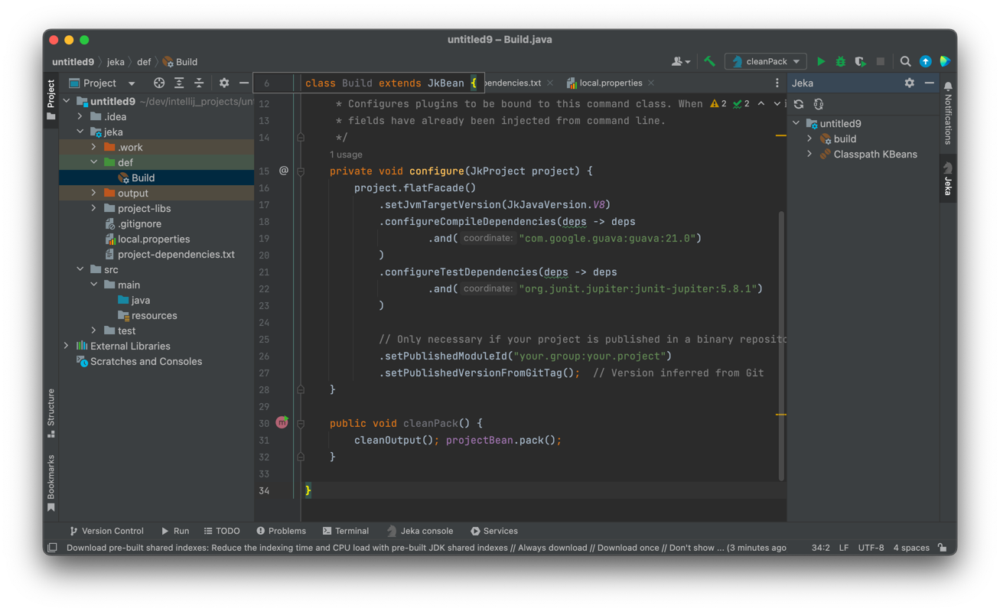
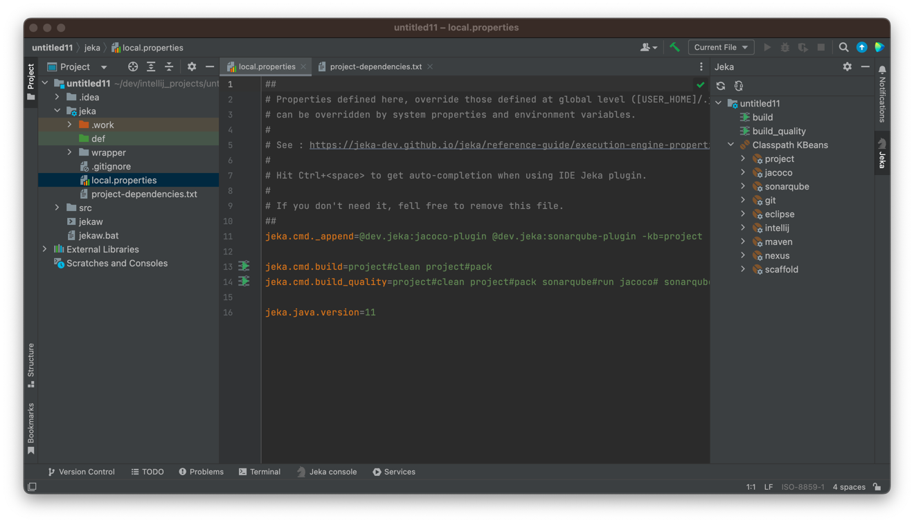
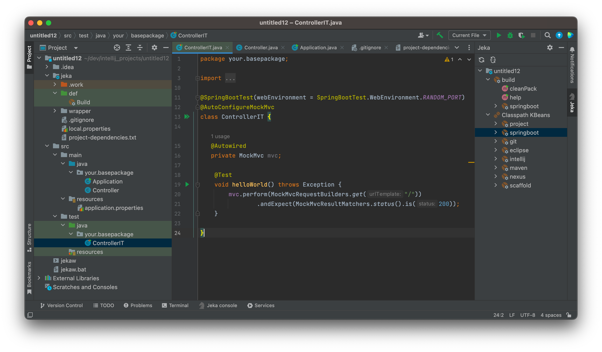

Getting started with Jeka¶
Install Intellij Plugin ¶
- Install plugin directly from here or search jeka in Intellij Marketplace.
As this plugin embeds its own version of Jeka, that's all we need to install on our machine.
Hello World ! ¶
The below example showcases how to write tasks executable both from IDE and command line.
- Create a new Jeka project in Intellij : New > Project ... > Jeka

Leave default (we might change the name) and press Create.
Note
Jeka structure (folders and files) can be created on an existing project from any type. On IntelliJ project window-tool : Select project > Click Left > Jeka ... > Scaffold ...

We get a workable Jeka project from we can :
- execute/debug methods from the IDE using editor gutter buttons or tool-windows explorer.
- navigate to discover available KBeans on this project, and their content.
- create Intellij run-configuration from existing methods
- execute methods directly in the terminal (e.g.
./jekaw hello name=Joe) - create new methods/fields. If they do not appear on tool-window, use top menu button to refresh view.
Import 3rd Party libraries ¶
We can also import 3rd-party libraries to use in our build classes by using @JkInjectClasspathannotation.
Libraries referenced with coordinates will come into classpath along all their dependencies.

Do not forget to refresh iml explicitly when Jeka classpath has been changed.
Tip
Use Ctrl+space when editing @JkInjectClasspath to get dependency auto-completion.

Build a Java Project¶
-
Create a new Jeka project in Intellij : New > Project ... > Jeka
-
Select java project template and click Create

We get a workable Java project. Now we can :
- Add dependencies using
project.flatFacade().configureXxxDependencies()in Build class. - Add dependencies by editing project-dependencies.txt file
- Customize
projectinstance in order it fits our need.
After modifying your dependencies, do not forget to refresh Intellij by Right Click > Jeka Synchronise Iml File
Our project is ready to code. Invoke cleanPack to generate binary, sources and javadoc jar files.
Tip
Navigate to the right-side Jeka Tool Window > Classpath KBeans > project to see all available methods.
Right-click on a methods to run/debug it from IDE. It is possible to combine several methods using Run... or Debug...
For most standard project, we may not need build code, only simple properties file. To scaffold such a project :
-
Create a new Jeka project in Intellij : New > Project ... > Jeka
-
Select java project - code.less template and click Create
We get :

Execute ./jekaw :build_quality to make a full build and perform Sonarqube analysis + code coverage.
Properties and code can be used in conjunction, tough build class may override values defined in local.properties.
We will find many project examples here
Learn more about Java project builds
Learn more about dependency management
Build a Springboot Project ¶
-
Create a new Jeka project in Intellij : New > Project ... > Jeka
-
Select springboot project template and click Create

We get a project ready to code containing already a workable RestController and its test counterpart.
Execute ./jekaw project#pack to generate the bootable jar.
Execute ./jekaw project#runJar to run the bootable.jar
Note
As for java project, Springbooty projects can be scaffolded with code.less flavor.